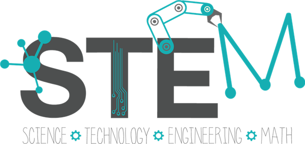

I am excited to immerse myself into ISWS!
This is my first year with the It Starts with STEM. We have the opportunity to be involved as a tutor in the sciences for the 5th, 6th, and 7th graders of St. Francis of Cleveland! We do lots of fun experiments each week with the kids and teach them how to apply their knowledge of science to things in their everyday lives! I am in great anticipation of the experiences I will have and the impact on the students.
I was elected as the VP of Communications for this school year, 2018-2019!